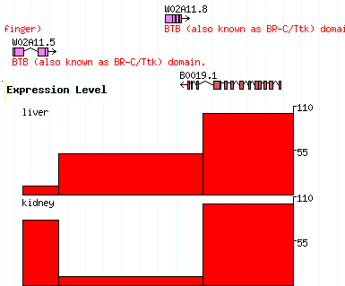

| Uploading | Editing | Deleting | Downloading | File Format | Customizing Appearance | Displaying Intensity Plots & Other Numeric Data | Publishing |
|---|
You can upload your own list of sequence annotations to this page and view them in the context of the genome. Uploaded annotations will persist until you edit them or delete them. Your annotations are private and will not be seen by other individuals. If you choose to, you can publish your annotations and share them with your colleagues.
The browser should now show a line of text that identifies the date you uploaded this file, and links to the sequence(s) which you have annotated:
[your_file.txt] Last modified Mon Dec 17 08:43:36 2001. Annotated sequences: T22A3
From now on, whenever you browse a region covered by your annotations they will appear on the display. To quickly go to an annotated region, click on its link. (If your file contains too many annotated regions they will not be shown as individual links.)
Your annotations will persist until you delete them, or until they are not accessed for a long period of time, typically 60 days. To modify them, you can upload a new file, replacing the old one. Alternatively, you can edit them on-line.
You can use the edit button to create an annotation file from scratch. Just type the annotation data into the text field or cut and paste from your favorite word processor.
Annotation files must be text only. Here is an example:
reference = B0511 EST yk260e10.5 15569-15724 EST yk672a12.5 537-618,3187-3294 EST yk595e6.5 552-618 EST yk595e6.5 3187-3294 EST yk846e07.3 11015-11208 SwissP PECANEX 5513-16656 "From SwissProt" FGENESH "Gene 1" -1200..-500,518..616,661..735,3187..3365 "Pfam domain" FGENESH "Gene 2" 16626-17396,17451-17597 reference = T22A3 FGENESH "Gene 4" 18459-18722,18882-19176,19572-30000 "Transmembrane protein"
The annotation file must have at least one reference = landmark name line. This line tells the browser what coordinate system you are using. You may use any of the landmarks accepted by this browser, such as chromosomes, contigs, GenBank/EMBL accessions, PCR primer pairs, genetic markers, or predicted genes (the acceptable landmark types depend on how the browser is configured; please see the synopsis on the main page for the list).
The word "reference" must be all lower-case. There may or may not be whitespace before and after the "=" sign. Examples:
reference = Locus:let-3 reference=Chr19 reference= AB29191.4 reference = PCR_Product:sjj_T22A3.2
You may have several reference lines in the file. Each reference landmark will apply to all data lines located beneath it until the next reference line occurs.
Each annotation occupies one or more lines. It contains three to five columns, delimited by tabs or spaces:
1..10,49..80,110..200
To describe an oriented feature that is on the minus strand, such as a transcribed gene, simply reverse the order of the start and stop ranges. For example:
200..110,80..49,10..1
All ranges uses the coordinate system of the most recently declared reference landmark.
In addition to this format, you may use the standard GFF format for your data. Details can be found at the Sanger Centre.
You can group related features together. The layout will attempt to keep grouped features together, and will connect them with a dotted or solid line if the connector option is specified.
A group is created using a line that contains just two columns consisting of the feature type and name. This is followed by a series of data lines in which the feature type is blank. For example:
cDNA-clone yk53c10
yk53c10.5 18892-19154
yk53c10.3 15000-15500,15700-15800
[cDNA-clone]
glyph = segments
connector = dashed
This example creates a group of type "cDNA-clone" named Yk53c10. It consists of two sub-features, one the 5' EST and the other the 3' EST. The two configuration section that follows this group says to use the "segments" glyph and to connect the parts using a dashed line. This is described in more detail later.
You can add URLs and descriptions to the components of a group, but not to the group as a whole.
You can place a comment in the annotation file by preceding it with a pound sign (#). Everything following the pound sign is ignored:
# this is a comment
The browser will generate a reasonable display of your annotations by default. However, you can customize the appearance extensively by including one or more configuration sections in the annotation file. In addition to changing the size, color and shape of the graphical elements, you can attach URLs to them so that the user will be taken to a web page of your choice when he clicks on the feature.
Here is an example configuration section. It can appear at the top of xthe file, at the bottom, or interspersed among data sections:
# example file [general] height = 12 strand_arrow = 1 [EST] glyph = segments bgcolor= yellow connector = dashed height = 5 [FGENES] glyph = transcript2 bgcolor = green description = 1
The configuration section is divided into a set of sections, each one labeled with a [section title]. The [general] section specifies global options for the entire image. Other sections apply to particular feature types. In the example, the configuration in the [EST] section applies to features labeled as having type "EST", while the configuration in the [FGENES] section applies to features labeled as predictions from the FGENES gene prediction program. Options in more specific sections override those in the general section.
Inside each section is a series of name=value pairs, where the name is the name of an option to set. You can put whitespace around the = sign to make it more readable, or even use a colon (:) instead if you prefer. The following option names are recognized:
| Option | Value | Example |
|---|---|---|
| bgcolor | Background color of each element | blue |
| bump | Prevent features from colliding (0=no, 1=yes) | 1 |
| connector | Type of group connector (dashed, hat or solid) | dashed |
| description | Whether to print the feature's description (0=no, 1=yes) | 0 |
| fgcolor | Foreground color of each element | yellow |
| glyph | Style of each graphical element (see list below) | transcript |
| height | Height of each graphical element (pixels) | 10 |
| key | Key to the feature. This is a human-readable description that will be printed in the key section of the display | ESTs aligned via TwinScan 1.2 |
| label | Print the feature's name (0=no, 1=yes) | 1 |
| linewidth | Width of lines (pixels) | 3 |
| link | URL to link to. This is a Web link in which certain variables beginning with the "$" will be replaced with feature attributes. Recognized variables are: $name - the name of the feature, and $type - the type of the feature (e.g. EST). | link = http://www.your.site/db/get?id=$name;type=$type |
| citation | This is a longer narrative description of the feature intended to identify the author and detailed description of the method. It can be either a text description or a link. | http://your.site.org/detailed_description.html |
| strand_arrow | Indicate feature strandedness using an arrow (0=no, 1=yes). NB: Strandedness is depicted differently by different glyphs, and in some cases is the default. | 1 |
| section | Indicates where in the gbrowse window this type of feature
should be placed: "details"=details panel;
"overview"=overview panel; "region"=region panel (if there is
one for this source);
"details+overview"=both panels; "details+overview+region"=all
three panels. "details" is the default. |
details+overview |
The bump option is the most important option for controlling the look of the image. If set to false (the number 0), then the features are allowed to overlap. If set to true (the number 1), then the features will move vertically to avoid colliding. If not specified, bump is turned on if the number of any given type of sequence feature is greater than 50.
Unlike the data section, you do not need to put quotes around option values that contain white space. In fact, you can continue long option values across multiple lines by putting extra space in front of the continuation lines:
[GenomeAlign] citation = The pseudoobscura genome was aligned to melanogaster using GenomeAlign version 1.0. High-similarity regions are shown in blue, low similarity regions are shown in orange. The work was performed by Joe Postdoc, and is currently in press.
Some glyphs also have glyph-specific options. These are described in detail below.
Colors are English-language color names or Web-style #RRGGBB colors (see any book on HTML for an explanation). The following colors are recognized:
| white | coral | darkslateblue | green | lightpink | mediumslateblue | paleturquoise | sienna |
| black | cornflowerblue | darkslategray | greenyellow | lightsalmon | mediumspringgreen | palevioletred | silver |
| aliceblue | cornsilk | darkturquoise | honeydew | lightseagreen | mediumturquoise | papayawhip | skyblue |
| antiquewhite | crimson | darkviolet | hotpink | lightskyblue | mediumvioletred | peachpuff | slateblue |
| aqua | cyan | deeppink | indianred | lightslategray | midnightblue | peru | slategray |
| aquamarine | darkblue | deepskyblue | indigo | lightsteelblue | mintcream | pink | snow |
| azure | darkcyan | dimgray | ivory | lightyellow | mistyrose | plum | springgreen |
| beige | darkgoldenrod | dodgerblue | khaki | lime | moccasin | powderblue | steelblue |
| bisque | darkgray | firebrick | lavender | limegreen | navajowhite | purple | tan |
| blanchedalmond | darkgreen | floralwhite | lavenderblush | linen | navy | red | teal |
| blue | darkkhaki | forestgreen | lawngreen | magenta | oldlace | rosybrown | thistle |
| blueviolet | darkmagenta | fuchsia | lemonchiffon | maroon | olive | royalblue | tomato |
| brown | darkolivegreen | gainsboro | lightblue | mediumaquamarine | olivedrab | saddlebrown | turquoise |
| burlywood | darkorange | ghostwhite | lightcoral | mediumblue | orange | salmon | violet |
| cadetblue | darkorchid | gold | lightcyan | mediumorchid | orangered | sandybrown | wheat |
| chartreuse | darkred | goldenrod | lightgoldenrodyellow | mediumpurple | orchid | seagreen | whitesmoke |
| chocolate | darksalmon | gray | lightgreen | mediumseagreen | palegoldenrod | seashell | yellow |
| coral | darkseagreen | green | lightgrey | mediumslateblue | palegreen | sienna | yellowgreen |
The ``glyph'' option controls how the features are rendered. The following glyphs are implemented:
| Name | Description | |
|---|---|---|
| generic | A filled rectangle. | |
| ellipse | An oval | |
| arrow | An arrow; can be unidirectional or bidirectional. It is also capable of displaying a scale with major and minor tickmarks, and can be oriented horizontally or vertically. | |
| segments | A set of filled rectangles connected by solid lines. Used for interrupted features, such as gapped alignments and exon groups. | |
| transcript | Similar to segments, but the connecting line is a "hat" shape, and the direction of transcription is indicated by a small arrow. | |
| transcript2 | Similar to transcript, but the direction of transcription is indicated by a terminal segment in the shape of an arrow. | |
| anchored_arrow | Similar to arrow, but the arrow is drawn in order to take account of features whose end-point(s) are unknown, rather than to indicate strandedness. | |
| primers | Two inward pointing arrows connected by a line. Used for STSs. | |
| triangle | A triangle, used to represent point features like SNPs, or deletions and insertions. May be oriented north, south, east or west. | |
| xyplot | A histogram, line plot or column chart,
used for graphic numeric features such as microarray intensity values. To indicate
the value you wish to chart, add a score=XXXX note to the description section:
| |
| trace | Reads a SCF sequence file and displays the trace graph. |
The following glyph-specific options are recognized:
| Glyph | Option | Description |
|---|---|---|
| arrow, anchored_arrow | tick | Draw major and minor ticks on arrow. (0 = no ticks, 1 = major ticks, 2 = major & minor ticks) |
| parallel | Whether to draw the arrow parallel to the sequence or perpendicular to it (1=parallel, 0=antiparallel). | |
| northeast, east | Force a north or east arrowhead. (The two option names are synonyms.) (0=false, 1=true) | |
| southwest, west | Force a south or west arrowhead. (The two option names are synonyms.) (0=false, 1=true) | |
| double | force doubleheaded arrow (0=false, 1=true) | |
| base | Draw a vertical base at the non-arrowhead side (0=false, 1=true). | |
| scale | Reset the labels on the arrow to reflect an externally established scale. | |
| primers | connect | Whether to connect the inward-pointing arrowheads by a line (0=false, 1=true) |
| connect_color | Color of the connecting line | |
| triangle | point | Is this a point-like feature? If true, the triantle will be drawn at the center of the range, and not scaled to the feature width. (0=false, 1=true) |
| orient | Orientation of the triangle. (N=north, S=south, E=east, W=west) | |
| xyplot | graph_type | Type of graph (histogram, boxes, line, points, linepoints) |
| min_score | Minimum score for feature (will be level 0 on graph) | |
| max_score | Maximum score for feature (will be level 0 on graph) | |
| scale | Where to draw the Y axis scale, if any (left, right, both, none) | |
| point_symbol | When using points or linepoints graph types, controls the symbol to use for the data points. One of triangle, square, disc, point, or none. | |
| point_radius | The radius of the symbols, if applicable, in pixels | |
| trace | trace | Specify the trace path or URL to use for this feature. |
| trace_prefix | String to prepend to each trace path. You may prepend a directory or a partial URL. | |
| trace_height | The height in pixels that the trace will be drawn. | |
| vertical_spacing | Vertical distance from the box that shows the physical span of the feature to the top of the picture (in pixels). | |
| glyph_delegate | Glyph to use when zoomed out too far for the trace to be drawn. | |
| a_color | Color of the line representing Adenine on the trace. | |
| c_color | Color of the line representing Cytosine on the trace. | |
| g_color | Color of the line representing Guanine on the trace. | |
| t_color | Color of the line representing Thymine on the trace. | |
| show_border | Show the black border from around the trace (0=false, 1=true) |
You can upload microarray intensity data sets and other numeric data. The plot of the data will be displayed as a histogram or line chart superimposed on the genomic annotations.
Here is a simple template for you to follow. The result is shown on the right. 
[expression] glyph = xyplot graph_type=boxes fgcolor = black bgcolor = red height=100 min_score=0 max_score=110 label=1 key=Expression Level reference=B0019 expression liver 10000..12000 score=10 expression liver 12001..19999 score=50 expression liver 20000..25000 score=100 expression kidney 10000..12000 score=80 expression kidney 12001..19999 score=10 expression kidney 20000..25000 score=100 |
The [expression] section says to use the xyplot type of glyph, to set its type to "boxes" (a column chart), to make the fore and background colors black and red respectively, to set the height of the chart to 100, and to set the minimum and maximum values for the Y axis to 0 and 110 respectively. We also add a label and a human-readable track key.
The data section defines two experiments to show in the track. Both experiments use probes whose positions are relative to landmark B0019 (you can of course use chromosome coordinates, or whatever you choose). Both experiments are of type "expression", but one is the "liver" experiment and the other is the "kidney" experiment, as indicated in the second column. The third column contains the coordinates of each assay point, and the fourth column contains the score=XXX attribute, where XXX is the intensity value.
See the chart in the previous section for the xyplot glyph options.
If you have access to a web server, you can easily publish your annotations. Simply take the annotation data file and place it on a Web server that is accessible to the Internet (or at least to the server on which the Genome Browser runs).
Type the URL of your annotation file into the Enter Remote Annotation URL text field of the genome browser screen. Your annotation file be will accessed by the web server on which the genome browser runs, loaded and displayed. Repeat this process to add more external annotation tracks to the display. To remove a URL, just delete the contents of the field.
Right-click on the bookmark this link link in order to save the information to a URL that you can bookmark or mail to your colleagues.
Please report them to the author.
Lincoln Stein <lstein@cshl.org>